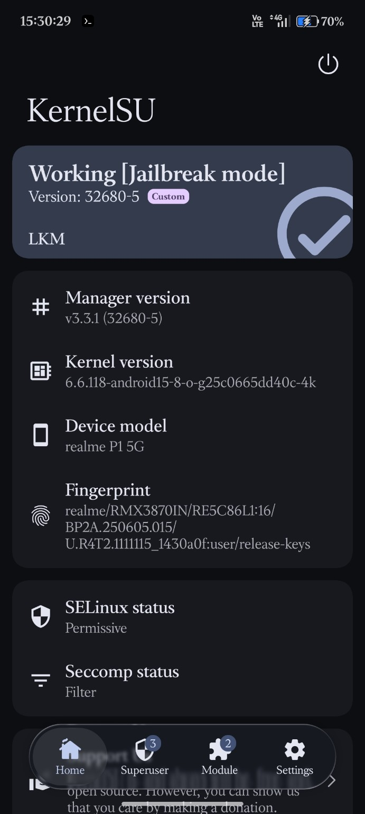
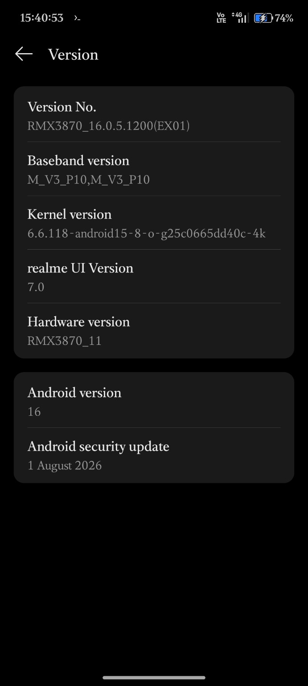
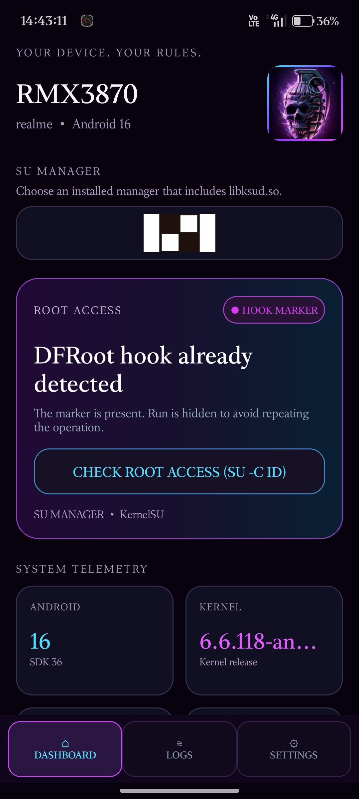

DFRoot
modified 6.0 release APK. Review the upstream project and its terms before redistribution.
A device-specific record of the observed KernelSU + DFRoot setup on the Realme P1 5G (RMX3870), running Android 16 and realme UI 7.0.
Values transcribed from the provided screenshots.
| Device / model | realme P1 5G · RMX3870 |
|---|---|
| Firmware | RMX3870_16.0.5.1200(EX01) |
| Android / UI | Android 16 · realme UI 7.0 |
| Security update | 1 August 2026 |
| Kernel | 6.6.118-android15-8-o-g25c0665dd40c-4k |
| KernelSU manager | v3.3.1 (32680-5) |
| Observed KernelSU state | Working · Jailbreak mode · LKM |
| Bootloader status | 🔒 Locked |
| SELinux | Permissive (as shown in screenshot) |
Keep the original screenshots in the assets/ folder when uploading this page to GitHub.



modified 6.0 release APK. Review the upstream project and its terms before redistribution.
KernelSU is the root solution shown in the supplied screenshot.
Share exact firmware details, reboot persistence, bugs, and recovery outcomes. One device's result is not universal compatibility.